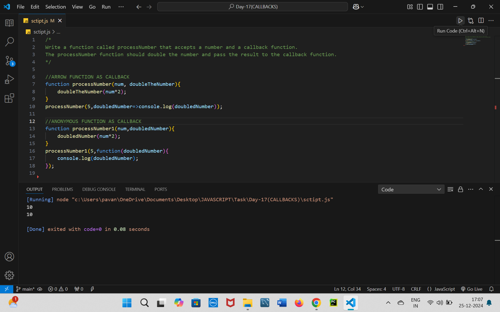
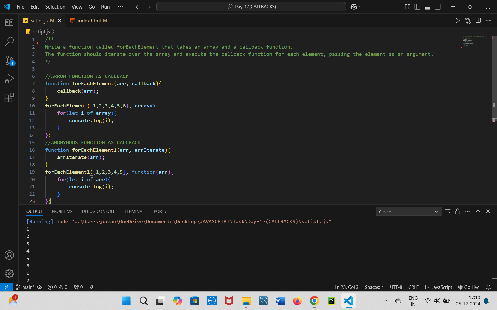
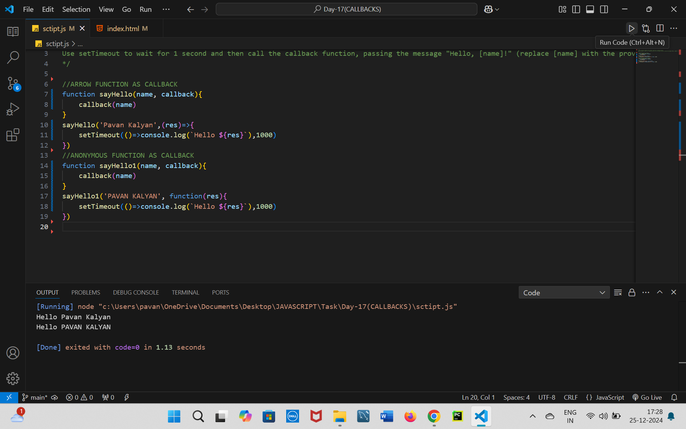
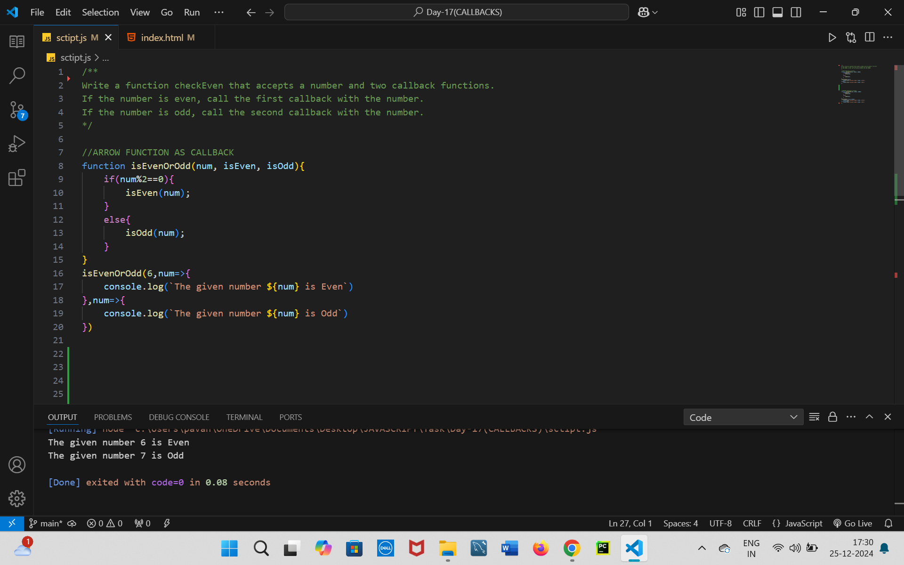
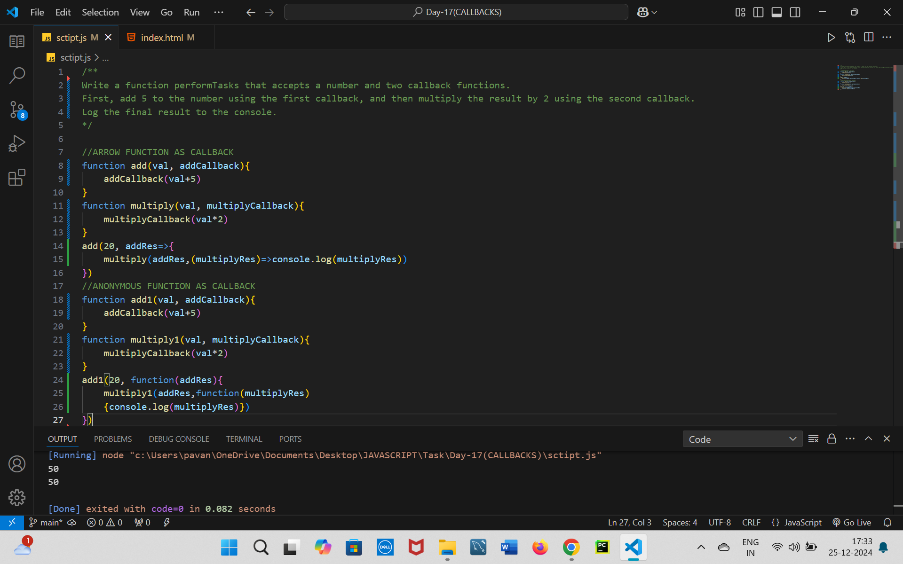

CALLBACKS
/*
Write a function called processNumber that accepts a number and a callback function.
The processNumber function should double the number and pass the result to the callback function.
*/
CODE
//ARROW FUNCTION AS CALLBACK
function processNumber(num, doubleTheNumber){
doubleTheNumber(num*2);
}
processNumber(5,doubledNumber=>console.log(doubledNumber));
//ANONYMOUS FUNCTION AS CALLBACK
function processNumber1(num,doubledNumber){
doubledNumber(num*2);
}
processNumber1(5,function(doubledNumber){
console.log(doubledNumber);
});

/**
Write a function called forEachElement that takes an array and a callback function.
The function should iterate over the array and execute the callback function for each element, passing the element as an argument.
*/
CODE
//ARROW FUNCTION AS CALLBACK
function forEachElement(arr, callback){
callback(arr);
}
forEachElement([1,2,3,4,5,6], array=>{
for(let i of array){
console.log(i);
}
})
//ANONYMOUS FUNCTION AS CALLBACK
function forEachElement1(arr, arrIterate){
arrIterate(arr);
}
forEachElement1([1,2,3,4,5], function(arr){
for(let i of arr){
console.log(i);
}
})

/**
Write a function sayHello that accepts a name and a callback function.
Use setTimeout to wait for 1 second and then call the callback function, passing the message "Hello, [name]!" (replace [name] with the provided name).
*/
CODE
//ARROW FUNCTION AS CALLBACK
function sayHello(name, callback){
callback(name)
}
sayHello('Pavan Kalyan',(res)=>{
setTimeout(()=>console.log(`Hello ${res}`),1000)
})
//ANONYMOUS FUNCTION AS CALLBACK
function sayHello1(name, callback){
callback(name)
}
sayHello1('PAVAN KALYAN', function(res){
setTimeout(()=>console.log(`Hello ${res}`),1000)
})

/**
Write a function checkEven that accepts a number and two callback functions.
If the number is even, call the first callback with the number.
If the number is odd, call the second callback with the number.
*/
CODE
//ARROW FUNCTION AS CALLBACK
function isEvenOrOdd(num, isEven, isOdd){
if(num%2==0){
isEven(num);
}
else{
isOdd(num);
}
}
isEvenOrOdd(6,num=>{
console.log(`The given number ${num} is Even`)
},num=>{
console.log(`The given number ${num} is Odd`)
})
//ANONYMOUS FUNCTION AS CALLBACK
function isEvenOrOdd1(num, isEven, isOdd){
if(num%2==0){
isEven(num);
}
else{
isOdd(num);
}
}
isEvenOrOdd(7,function(num){
console.log(`The given number ${num} is Even`)
},function(num){
console.log(`The given number ${num} is Odd`)
})

/**
Write a function performTasks that accepts a number and two callback functions.
First, add 5 to the number using the first callback, and then multiply the result by 2 using the second callback.
Log the final result to the console.
*/
CODE
//ARROW FUNCTION AS CALLBACK
function add(val, addCallback){
addCallback(val+5)
}
function multiply(val, multiplyCallback){
multiplyCallback(val*2)
}
add(20, addRes=>{
multiply(addRes,(multiplyRes)=>console.log(multiplyRes))
})
//ANONYMOUS FUNCTION AS CALLBACK
function add1(val, addCallback){
addCallback(val+5)
}
function multiply1(val, multiplyCallback){
multiplyCallback(val*2)
}
add1(20, function(addRes){
multiply1(addRes,function(multiplyRes)
{console.log(multiplyRes)})
})
